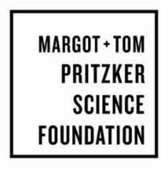

Trade Mark Journal No.2025/051 19 December 2025
UK00004307255 8 December 2025 (35,36)

International priority date claimed: 15 September 2025
(United States of America)
(99392356)
- Class 35
- Administration and management of research grants; organizing and developing charitable projects in the field of science; promoting collaboration within the scientific, research and medical communities to achieve advances in the field of science; promoting collaboration within the scientific, research and provider communities to achieve advances in the field of science; providing public policy information in the field of scientific advances and reform; writing of grant proposals for non-profit organizations, educational institutions and other community organizations; writing of grant proposals for potential grants to non-profit organizations, educational institutions and other community organizations; business services for others, namely, managing business processes to facilitate the online scientific, medical, technical, and financial analysis of third party proposals for research grants and third party progress reports regarding ongoing research; providing business management consultation services in the field of scientific research and publishing.
- Class 36
- Charitable foundation services, namely, providing financial investment and assistance for programs and services of others; philanthropic and charitable services, namely, providing investments and grants in the field of science and scientific advancement; philanthropic services concerning monetary donations; charitable foundation services, namely, providing financial assistance for programs and services of others; providing grants for charitable purposes in the fields of science and technology.
Margot and Tom Pritzker Foundation, LLC
Representative: Mishcon de Reya LLP